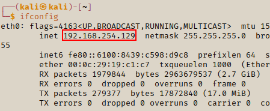

Scripting With Bash
In this section we will cover how to write Bash scripts to get IP addresses and also how to automate the process.
Ping Sweep
We will write a ping sweep that will ping a divice and if it's open to send us a result. With that result we will take the device's IP address. For the simplicity of this example, we wil ping our own IP address.
ifconfig

ifconfig to find our IP address
ping 192.168.254.129

When we exit we will see how many packets responded
When we ping an IP address, if the address exists we will recieve a response until we stop the connection. If there is no response then it means that the IP address was invalid or that it has a blocker.
To automate our ping requests, we really want to look out for 1x packet from our ping. If we use -c 1 at the end of our pings, this will tell the terminal that we just want one result back. -c means count so when we use -c 1 we are saying just count 1x packet.
ping 192.168.254.129 -c 1

We can save this command to a file. Then when we run the file we will get the results.
If we look at the results more carfully, we can see that there's some information that we don't really need. We can use the grep command to filter out what we want from the file. When we use grep then followed by the string we are looking for, it will reveal the matching data and leave the rest.
Save ping to file

View file

Filter file with grep

We can add some more filters to get just the IP addresses by using the cut keyword.
This will count to the number of spaces provided and select that from the data, leaving out the rest.

This returns the IP address but there's an unwanted semi-colon that we need to remove. We can do this with tr the command. We place this at the end and give it the characters to remove.

We will create a new Bash file using the mousepad text editor.
mousepad ipsweep.sh

.sh to create a bash file
We will create a for loop so we can check the IP address from 1 - 254. For the for loop we have created a variable called ip which will be used to loop through every IP address. `seq 1 254` is like a range, from 1 to 254.
The $ in the for loop are place holders for our arguments to be passed through the for loop.
ipsweep.sh

$1 is referencing the number of arguments being assed.
$ip is referencing the last number of the IP address in the for loop.
We only need to pass the first 3x parts of the IP address beacuse the for loop will complete the rest.
Before we can run the file we have to change the permissions because by default it won't have full access.
We do this by using the chmod method as explained in the previous lessons.
chmod -x ipsweep.sh

Gives the file full permissions.
ls -la

Check the permissions of the file
Now we can run the file! To run the file we use ./ipsweep.sh followed by the IP address we want. This will then do a for loop to check all the active IP addresses linked to that address.
./ipsweep 192.168.254

We can make imporvements by adding an if statement so that if the user doesn't add an IP address the script will display a message asking for a IP address.

Always remember to close the if statement with fi.

fi closes the if statement
Now when you run the file without an IP address you will recieve a message to eneter an IP address.

Now that we have the improved bash script we can save our list to a file. With this file we can then use for later to run our exploit.
./ipsweep 192.168.254 > ips.txt

One-Line Bash statements
We also can use one-line statments in Bash to iterate through each IP address in my file. In a real scenario we would probe our target's network to retrieve any IP addresses. The ones we manage to retrieve we would then save to a file and then be able to run a nmap scan on the addresses via a for loop.
for ip in $(cat ips.tx); do nmap $ip; done

$(cat ips.tx); is what the for loop variable will loop through